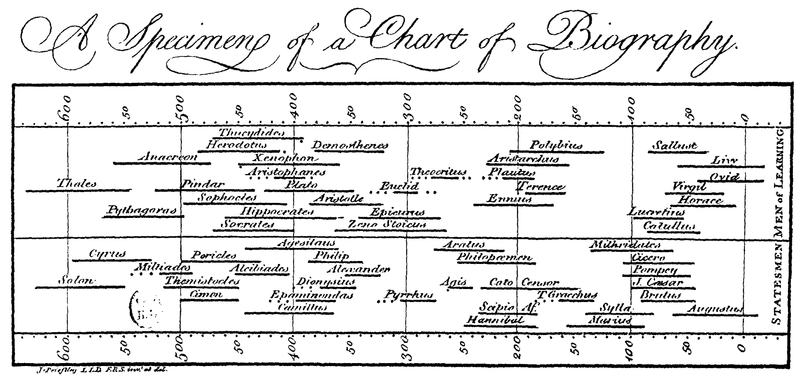
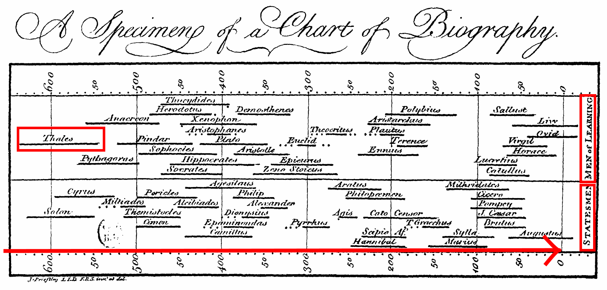
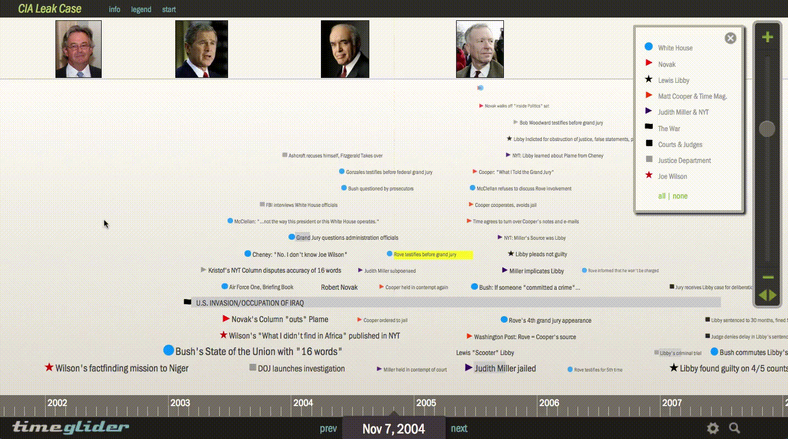
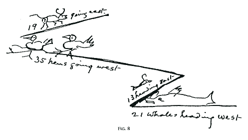
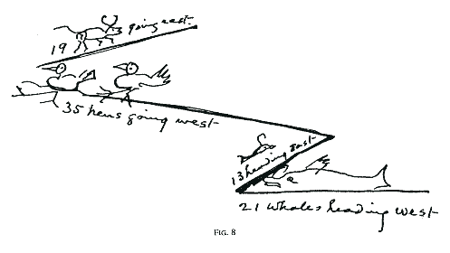

Timeline Storyteller
From Visualization Design Space to Deployment
Matthew Brehmer · mabrehme [at] microsoft.com · @mattbrehmer
Microsoft Research The University of Calgary Data Empowerment Speaker Series · June 18, 2018 · mattbrehmer.github.io/talks/uc180618/
In 2015, I became somewhat obsessed with timelines, collecting and cataloguing hundreds of diagrams and techniques that visually communicate sequences of events. This inspired me to develop a visualization sandbox for rapidly generating alternative timeline designs during an internship at Microsoft Research. In parallel to this, my colleagues and I produced a timeline design space along with a set of related guidelines for narrative visualization . In this talk, I will present what has happened since we wrote a paper about our design space and survey. Upon returning to Microsoft Research, I revisited my sandbox project and developed Timeline Storyteller, an open-source authoring tool for presenting visually expressive timeline-based stories. Following its release as a prototype web application in early 2017, I worked with the MSR Special Projects team to release Timeline Storyteller as a component for Microsoft Power BI, an established business intelligence tool with a large worldwide user community. I will speak about the use of Timeline Storyteller in large public presentations, the results of a storytelling contest that we held for members of the Power BI community, and observations regarding a corpus of user-generated content. Finally, I will reflect upon our methodology for studying the usage and adoption of Timeline Storyteller and more generally what researchers and practitioners can do to evaluate deployed visualization authoring tools.

Image:
Perhaps the most common representation for time is linear: the time as an arrow metaphor.
Chart of Biography published over 250 years ago,

Image:
Here time is mapped from left to right (the years are BCE here); you can see the lifespans of a number historical figures, offset vertically to avoid overdrawing.
Image:
Radial representations are especially effective when presenting and highlighting natural cycles and events that repeat,
Image:
But of course time is both linear AND cyclic, like this staircase, something that repeats and yet coils upwards or forwards.
Image:
Yet another representation for time is the grid, often manifested as a calendar.
See "How to make history dates stick " by Mark Twain in Harper's Monthly Magazine (1914).
The last class of representation that I'll speak about is not restrained by a specific shape.
What is a Timeline For?
And that is, what is a timeline for?
What happened when?
In what sequence did the events occur?
How long did the events last?
How long between event A B
Did A B
When did A B C
Basically, a timeline communicates to the viewer "WHAT HAPPENED WHEN?".
CLICK : But if we unpack this question, a timeline can answer a number of more detailed questions, like:
The Careers of U.S. Open Golf Champions
Images: Dustin Johnson ; R: Jim Furyk
To illustrate these questions and the effects of different time scales, I'm going to talk about golf.
The Careers of U.S. Open Golf Champions
Data source: Wikipedia . This data is also featured in this demo video .
MAX : What you're seeing here are two timelines, Furyk's is on top, Johnson's on the bottom, indicating the results of every U.S. Open appearance in their respective careers.
NEXT : You can see that Furyk has appeared at the U.S. Open for longer than Johnson, and that they both have only one victory to date under their belt.
NEXT : In comparison, golf legend Ben Hogan appeared many times over the course of 4 decades, and he won an impressive four times during a six year span in the late 1940s / early 1950s.
NEXT : Johnson and Furyk never played with Hogan, they were born at different times, and it's a bit unfair to compare a mid-career golfer and an early-career golfer to a legend like Hogan.
NEXT : But by changing the scale to one that is relative to their births, we can see if Johnson or Furyk are on track to follow in Hogan's footsteps.
NEXT : Or we can remove relative chronology altogether and keep just the sequence of their U.S. Open appearances, where we learn that, coincidentally, all 3 golfers won in their 9th appearance.
NEXT : And finally I can introduce you to another legend, Jack Nicklaus, who appeared more than 40 times, and his 4 victories were more spaced out than Hogan's.
Timeline Design Choices in Timeline Storyteller
representations:
scales:
layouts:
Our timeline design space has
CLICK : Five representions, NEXT : five scales, NEXT : and third dimension which we call "Layout", or how to draw one or more timelines within a page or display:
Expressive Storytelling With Timeline Storyteller
Choice of representations and time scales
Incrementally reveal, hide, highlight, and annotate
Support for chronological or non-chronological narratives
Export, share, and present
So now that we have all of these design choices, how do we use these design choices to tell stories with timelines?
CLICK : In other words, how do combine different points in this design space?
CLICK : Existing tools also tend towards a chronological narrative: either the whole timeline is shown up front, so readers are likely to begin at the start of the timeline, or events are revealed in chronological order.
Results
Power BI version : 14K+ downloads, 2K unique monthly users, 35K+ YouTube views, 30+ tech news / blog posts, several community-produced tutorials.
Web version : 223 cases where authors opted into sharing their unique exported content with us.
Storytelling contest : 7 entries, 1 winner, 1 honorable mention.
Reflection
Design Space Coverage : Datasets spanning topics, sizes, and time spans; while linear chronological timelines dominate, all other design choices were represented.
Privacy & Data Retention : Timelines often reveal personal biographical information; discontinued logging of content exported from web version in Feburary 2018.
Scalability : Limited to coarse metrics about usage of Power BI version; reliance on other channels of communication (e.g., email, community forum, Github issues).
Possible Next Steps
Reccomendations : Given a dataset, recommend points in the design space, recommend annotations.
Complete Storytelling Lifecycle : Do people want to use Timeline Storyteller for data analysis?
Studying Expressivity at Scale : How can we study expressive information design with deployed tools? How do we assess the quality of content that people produce?
Summary: Timeline Storyteller
Different combinations of timeline representation and scale
Animated transitions, highlighting, and annotation
I want to finish by reiterating that despite the apparent simplicity of the question of "what happened when?",
20 purposeful , interpretable , & generalizable timelinesrevisited.github.io
And this process of categorization and implementation also led us to identify 20 viable points in the design space,
Purposeful in terms of their communicative intent, interpretable in terms of which perceptual task the viewer is expected to make, and generalizable across a range of timeline datasets.
ZOOM : This thumbnail gallery from our paper acts as a visual index for these 20 designs, and if you go to timelinesrevisited.github.io,
Our process: Phase 1
Collect and categorize 145
Sources included Cartographies of Time Visualization of Time-Oriented Data et al. ), Making Timelines
So how did we come up with this design space? Well,
CLICK : First, we collected and categorized 145 timelines and timeline visualization tools from various sources, and out of that came the dimensions of the design space.
Our process: Phase 2
Validate with 118 263
Sources included visual.ly , the Kantar IIB Showcase , massvis.mit.edu , ...
Implement points in the design space with 28
Survey data and dataset index can be found at timelinesrevisited.github.io
CLICK : Next, we verified that the design space could be used to label 118 additional timelines that we collected from different sources.
CLICK : We also implemented points in the design space with 28 event datasets, which varied in a number of ways, such as the number of events, the temporal extent of the data, or the rate of event co-ocurrence.
Other Timeline Tools: Timeglider

© (2010) Mnemograph LLC: timeglider.com
At one end of the storytelling spectrum, there's presenting an interactive choose-your-own adventure timeline, and there are quite a few tools out there that present timelines in this way, like this one called Timeglider. But these open-ended exploratory tools don’t guarantee that your story was communicated to the viewer; they are fine for open-ended data analysis, and there are certainly quite a few data analysis tools that look like this, but these tools don't guide the attention of the viewer along a narrative.
© (2013) Northwestern University Knight Lab: Timeline.JS
At the other end of the storytelling spectrum, you can reveal a timeline as a slideshow in the linear, left-to-right chronological order in which the events occur, which is theapproach taken by timeline presentation tools like Timeline.js, a popular presentation tool from the Northwestern University Knight Lab.
 By Matthew Brehmer, Bongshin Lee, and Nathalie Henry Riche
By Matthew Brehmer, Bongshin Lee, and Nathalie Henry Riche

 Timelines Revisited: A Design Space and Considerations for Expressive Storytelling · Brehmer, Lee, Bach, Riche, & Munzner. ·
IEEE TVCG 2017 · timelinesrevisited.github.io
Timelines Revisited: A Design Space and Considerations for Expressive Storytelling · Brehmer, Lee, Bach, Riche, & Munzner. ·
IEEE TVCG 2017 · timelinesrevisited.github.io
 Image: LadyofHats (Wikimedia Commons)
Image: LadyofHats (Wikimedia Commons)

 
See "How to make history dates stick" by Mark Twain in Harper's Monthly Magazine (1914).

See "How to make history dates stick" by Mark Twain in Harper's Monthly Magazine (1914).
.jpg){kind=link}
{kind=link}


 © (2013) Northwestern University Knight Lab: Timeline.JS
© (2013) Northwestern University Knight Lab: Timeline.JS